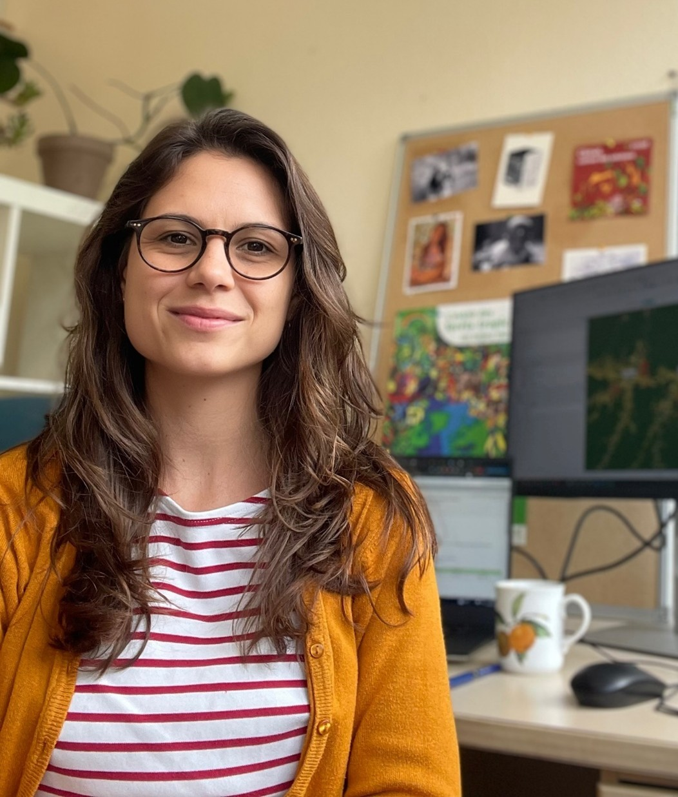

Research fellow · CIRAD / MoISA
Gabriela
Demarchi
My research explores how to reconcile food security and nutrition with the conservation of biodiversity and ecosystem functions
I am a research fellow at CIRAD and a member of the Montpellier Interdisciplinary Center on Sustainable Agri-Food Systems (MoISA). With a background in natural sciences and economics, I take a multidisciplinary approach to studying food systems and evaluating agricultural and conservation programs in the Global South. I am particularly interested in how conservation incentives and agroecological practices can support environmental sustainability and rural livelihoods, and how social and economic changes shape food choices and dietary practices.

Beyond Reducing Deforestation: Impacts of a REDD+ Project on Household Livelihoods
Using publicly available remote sensing products to evaluate REDD+ projects in Brazil
Permanence of avoided deforestation in a Transamazon REDD+ project (Pará, Brazil)
Enforcement and inequality in collective PES to reduce tropical deforestation: Effectiveness, efficiency and equity implications
Farmers' preferences for water-saving strategies in Brazilian eucalypt plantations
Food security and natural resources: diversification strategies
02 / Projects
From forests
to diets
Forest for Food
Evaluating the design of payments for ecosystem services, linking forest conservation with food security.
Trial registrationSHIFT
Research on sustainable, healthy diets and the transformation of food systems.
Project informationGCS REDD+
A comparative study of the effectiveness, efficiency and equity of REDD+ policies and initiatives.
Project informationMACACC
Modelling to support stakeholders adapting forestry and agroforestry systems to global change.
Project information03 / Contact
Get in touch
gabriela.demarchi [at] cirad.fr
CIRAD · UMR MoISA
73 rue Jean-François Breton
34398 Montpellier Cedex, France